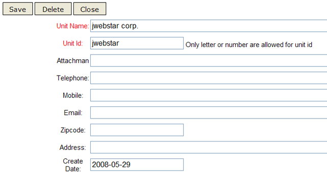
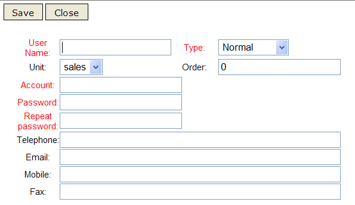
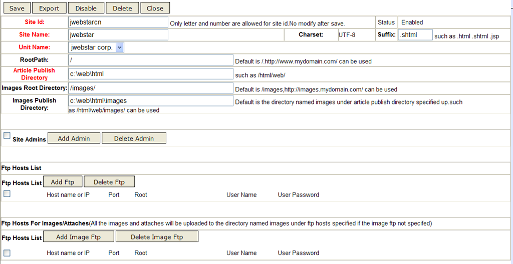
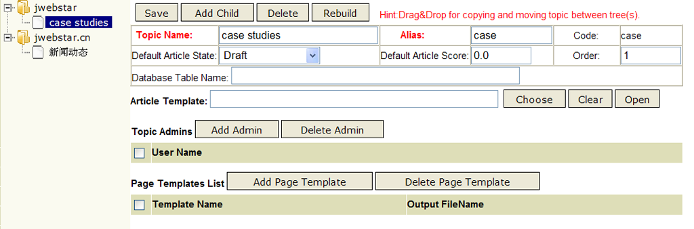

NPS website configuration and management
This manual is about configuring and managing websites.


Unit management
Unit management mainly refers to opening account for unit, configuring department, and managing people’s account.
- opening account for unit
-
Login NPS as system administrator.
Once installing system, the defaulted user name for administrator is “system”, password is “manager”.
Click “unit Admin” in the left navigation bar and click “add unit” in the right workspace as showed below. The “unit name” and “unique identifier” is required to fill. The unique identifier is globally unique, we advise to fill it with the abbreviation of unit name.

Save and close the new window, then start to configure department. - Department configuration
-
Click “unit Admin” in the left navigation bar and choose the unit whose department needs to be configured (click “checkbox” in the left).
Clicking “dept Admin”.
The tree structure in the left lists all available parts. There is only unit name in the tree structure if it is the first time opening account. Click the unit name and input department information in the right.
If you want to set up top-level department, you need to choose top-level unit in the left navigation bar (such as jwebstar corp. in the chart above).
If you want to set up lower-level department, you need to choose its superior department in the left navigation bar, then click “Add child”.
You can merge or independently operate department through dragging and dropping nodes in the left. - Managing staff’s account
-
After entering the department configuration interface, you can choose the department that need to "add user" in the left department tree. Then click “add user” in the right.

The items marked with red are required to fill.
Log-in account is namely your user name, and it’s not case sensitive. The log-in account is globally unique. Password is advised to be longer than 8 bits.
Super user is the account for system administrator. Only system administrators are able to new super user.
website configuration
The function of website configuration is to plan website’s deployment solution and management solution. Deployment solution refers to distributing front WEB server, setting picture&attachment server and organizing directory for local temporary files. Management solution mainly means assigning website administrator.

The items marked with red are required to fill.
Website unique identifier should be English letters or digits.
It is a unique ID in the global website.
The website name could be full name, abbreviation, or Chinese name.
All the files published by website are coded with UTF-8, thus requires:
1.Choosing UTF-8 as default code when configuring front WEB server such as Apache.
2.All the META head assigned in templates should designate UTF-8.
3.All the static web pages that made and uploaded manually should be coded in UTF-8 ( the META head and coding type of HTML files should be also coded in UTF-8). The files coding can be converted by professional tools such as UltraEdit or EditPlus.
Extension file name is the extended name of published and generated files. It depends on the configuration of your WEB server (for example, APACHE). Generally:
1.SHTML means static webpage supporting SSI command.
2.HTML or HTM means static webpage.
3.Some special application could be also set as JSP. For example: pages requiring strict control on authority could be published as JSP. The JSP pages published and generated by independent server should be separated with open HTML code.
In addition, you can also use self-defined filename suffixes such as JHTML, etc. However, you should configure the front WEB server so as to correctly identify the type you have set.
The function of website publishing directory is for storing the serial files published by NPS.
For large website, it is better to make separate partition for website publishing directory. The character of LINUX is that files are relatively small and there are many files sharing one directory. Therefore, in case of using LINUX operating system, we advise to use Reiserfs file system as partition’s file system. Reiserfs have outstanding performance in reading-writing directory contained massive small files. Even if processing directory contained 10 thousand files, Reiserfs still keep a desirable performance. For more details, please refer to articles on system optimization.
Regarding large web site, picture&attachment server and static webpage server should be separate (for example, large portals).
Tiny HTTPd is more efficient; therefore, it is better to allocate Tiny HTTPd for picture&attachment server. In this case, you should particularly specify the picture and attachment’s root directory as well as publishing directory. Moreover, you should set an independent server which is solely for uploading picture and attachment.
1.Picture&attachment’s root directory should point at the picture&attachment server’s domain name, for example, http://image.jwebstar.com/.
2.In case of some big picture&attachment, it is better to set separate partition for their publishing directory on NPS.
3.For large scale picture service which is under centralized network storage environment (for example, SAN), it is not necessary to establish independent picture&attachment server (namely don’t make allocation in front WEB sever with FTP mode). In contrast, you should use “mount” mode to independently upload SAN partition to every server. We advise to adopt OCFS2 as SAN file system, which is convenient to concurrently writing multiple nodes. For more details, please refer to articles on system optimization.
4.System limitation: picture&attachment applies localized storage mode, therefore, when NPS server is in cluster structure, you should put all picture&attachment directory in centralized storage mode (for example, SAN environment) to prevent attachment from missing during publishing process.
5.ATTENTION PLS: in order to preview images for resources, Picture&attachment's root directory must start with http:// or https://
It is necessary for uploading server to provide FTP service, and LINUX should adopt vsftpd. The uploading user should have authority to create directory and read-write files. If there are multiple front WEB servers, then all of them could be added. Every file published will automatically have a uploading route according to its uploading root directory.
The website administrator have all-round authority in managing the website, including setting department, adjusting personnel, establishing and organizing column, managing template, rebuilding and publishing websites, assigning column moderator, verifying and publishing articles. Such authorities are particularly useful when managing serial websites.
The website administrator has to be member of the organization that the website belongs to.
The number of website administrator could be plural.
Topic Management
The topic management is in tree structure, which enables you to directly design, organize, and arrange the whole website structure. Click "topic Admin" in the left navigation bar, as showed below:

When the first time you manage topic, you should directly click the website name in the topic table to establish top-level topic.
1.When establishing top-level topic, you should click the website name in the left topic table, then input topic information.
2.In case of establishing lower-level topic for certain topic, please select this topic in the left topic table, then click "Add child" to input information of the lower-level topic.
3.You can drag and drop topic to re-organize its level and structure, you can even duplicate and move topic among different websites.
The topic name should be easy to remember, such as “news”,it can be Chinese as well.
The topic’s alias name should be globally unique and must be presented as English or digit. ，
The topic’s code name will enable you to quickly organize template tags (namely topic code) according to its hierarchy. Every topic’s alias name should contains “.” except the top-level topic.
For example, the alias name of the “Chinese news” topic which under “news” is china, therefore, the topic’s code name is “news.china”.
The article modes include draft, submitted while verifying, verified while publishing, automatically publish.
1.The draft can only be seen by its creator.
2.Submitted while verifying means the article is being verified by moderator or website administrator. Once adopt the mode, all the newly established and saved articles will be automatically submitted for verification.
3.Both verified while publishing and automatically publish mode means the article will be automatically published. After being successfully published, the article mode will be automatically turned into “published”.
Article score is for accounting statistics.
Article template is for presenting ultimate articles.
Page template is employed to generate topic navigation, home page, and serial files fitted for certain area or format.
Articles can only be input into the lowest-level topic.
For example: if “Chinese news” and “international news” are under the topic of “news”,
then you should fix whether the article belongs to “Chinese news” or “international news” other than classify the article as “news”.
As a result, article template is necessary for the lowest-level topic.
The application and design of Page template is flexible.
Different template design and manufacture plan as well as particular application requirement can result different page template.
Please refer to the know-how of designing template.
Topic admin has the authority to verify and delete articles in the topic; moreover, he/she can also re-organize the topic.
Self-defined data source can be docked with external application, thus you can extract and publish data. The table name of self-defined data source could be the real table name or view.
For example: you have a professional gold quotation system and now you want to automatically publish the quotation information in HTML format in your website, then you could integrate the self-defined data source with current data. For more integration solutions, please refer to external data integration solutions.
If you use the product management module, then the relevant topic’s self-defined data source table name should be set to FT_PRODUCT.